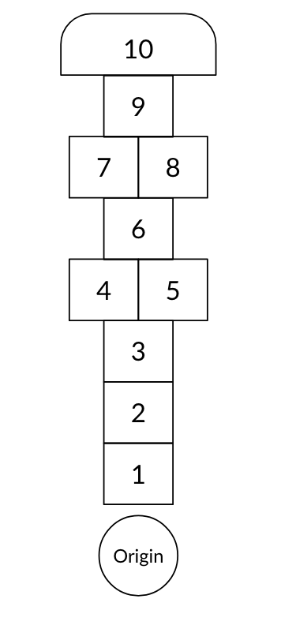

Players can get better at this game by practicing. The random elements are very limited (some I can think of are the type of markers, wind level, evenness of the surface, etc)
Problems with the game:
Limited randomness: The limited number of random elements can be both good and bad. There is currently no way for players to catch up, if they are less skilled. It would be better if more random elements are added, which makes the game enjoyable for both skilled and not skilled players
Limited strategy: Almost no strategic decisions need to be made in this game. More choices involve strategic thinking will make the game more interesting
Potentially boring waiting: When one player is playing his turn, other players need to wait until he finishes. It could be boring, especially in the early stage where failure is not so critical
Ideas:
Technology
Play the game on Shaolin quincuncial piles (see image). Each pile is a tile.
^ On top of that, put the piles in a lake. Whoever fails falls into water.
Use AR Kit, players can only see the lines and squares through their phone (this actually reminds me of a level in Mario Odyssey, where you can only see paths while wearing shades)
Play the game on the roof of a moving truck, wow how exciting is that
Play this game in zero gravity space, instead of hopping, player is only required to touch the next tile with one hand, by any means
Use a floating platform for tile 10, and let tile 10 always be moving (like a moving platform in Super Mario)
Use a pebble bow to shoot markers instead of throwing
Make an electronic hopscotch carpet that can detect player movement and monitor game progress. Play sounds and visual effects
Play the game on a computer, roll dices to decide whether each movement is successful
Use computer vision to decide whether a marker is one the line, out of the square, etc
Play this game in a swimming pool, use water polo balls as markers, instead of hopping, players are required to move to the next tile with one swing of arms
Instead of throwing markers, throw cats
Player the game on the roofs of 10 trucks at the same speed, each truck is considered one tile. Player is no longer required to move by hopping, they can run if they want
Play this game on a small wooden boat, make sure the boat doesn’t sink!
Play the game on ice
Story
Tile 10 is used to hold pieces of a complete story. When any player reaches tile 10, a single piece is given out. All players need to gather their pieces to figure out the story
On each tile, there are a number of different events, roll a die to decide which event to trigger. Each event may have different buffs and debuffs, like giving player the ability to skip one tile when hopping
Add a character to each tile, who greets the player as they passes by. Each character has unique personality
Add events to tile 5 and tile 8, use them to tell stories and change rules to adjust interest curve
Each tile has its own storyline, player need to reach further to get more story
Player need to say one single word when he arrives at a new tile. Their words add together to form a sentence and a story. They need to say a word that continues the sentence and makes sense for the story
Mechanics
Pair up! Two players are paired up and need to play the game together, each with only one foot on the ground
At tile 6 player can choose from hopping to tile 7/8 or straight to tile 10. If they choose the latter and succeed, they can advance one tile without going back to tile 1
Player can give up one round, and get two more chances for the next round (3 chances in total). Each player can do this no more than twice for the whole game
At the pairs, instead of hopping with both feet, hop with one feet through them. (i.e. treat them as ordinary tiles). This way, player needs to change their direction of hopping
Player need to close eyes before hopping
Use mechanical frogs to substitute real people, and play this game on tabletop
After each round, all players gather and play rock paper scissors, whoever wins gets two chances in the next round
After each round, roll a die, whoever gets the largest number gets two chances in the next round
Player need to correct complete a set of DDR at tile 10 before returning
Player need to play this game upside down (stand with hands), and hop with hands
Player need to play this game and a hula hoop at the same time, and the hula hoop should never fall
Draw the tiles on a treadmill and play while it’s running
Add barriers (around 10cm tall) between squares
Throw random balls to the squares, and require players not to touch balls during the game
Put a cup of water on player’s head, if water spills out of the cup, the player fails that round
A player cannot stay on one tile for more than 2 seconds
A player cannot spend more than 15 seconds for each round
Draw two sets of tiles, each player play on one set, and whoever finishes the game first wins. This makes hopscotch no longer a turn-based game
Add margins for tiles. The margins get larger as the number gets larger. i.e. the margins of tile 9 are much larger than the margins of tile 1
Add elements from monopoly: when a player arrives at a tile, he can choose to buy the land. Throughout the game, player can spend a certain amount of money to drag other players back
When player fails at the first hop for the first time, he gets another chance
Aesthetics
Manufacture well-designed hopscotch carpets and play on it
Draw lines with colored chalks
Decorate each square with decals
Fire a party popper everytime a player finishes a round
Players are required to wear Christmas sweaters to play this game
Players are required to wear LED shoes to play
Assign a “sound guy”, who plays a sound effect when a player arrives at a tile. Each tile has its own unique sound effect
Play the game in a dark room with limited lighting, so only rods (in human eyes) are triggered and player can only see black-white
Play the game while listening to loud electronic music
Play the game while listening to peaceful country music
Play the game while listening to epic symphony
Use slippery object as the marker
Part II
Idea 1 - The strategic kid
Add three new rules to the original game:
Player can give up the current round, and get two more chances for the next round (3 chances in total). Each player can do this no more than twice for the whole game. A chance is consumed in three ways:
Fail to throw the marker into a square
Fail to complete a circle
Successfully complete a circle
In one round:
If a player has one chance, he has 15 seconds to finish the round;
If a player has three chances, he has 30 seconds to finish the round;
If a player has more than three chance, he has 40 seconds to finish the round.
If a player fails during his second or latter chance, he cannot move during the next round
Idea 2 - No waiting!
This is no longer a “Free For All” style game. Players are split into two teams and compete with each other.
To achieve this, instead of drawing one set of tiles, draw two identical sets of them. Each team plays on their own set, whichever team get all members finish the game first wins.
In this way, hopscotch is no longer a turn based game. The risk is set to a minimal level, all players have infinite chances to fail and try again, they just need to find a way to do it as fast as possible. This idea also transforms hopscotch into a “team building” game.
Idea 3 - Random madness
Trigger events in two circumstances:
Event A: A player successfully completes a circle and can advance
Event B: A player fails in any means (hop out of squares or throw out of squares, etc)
Note: For one player, only one event can be triggered in one round. If no event triggered, the game proceed as normal.
For event A, player roll two dices, multiply the numbers.
If the number is larger than the number on the tile he was standing on at the start of his turn, he can advance.
If the number equals the number on the tile, he need to successfully finish another circle before advancing to the next tile
If the number is smaller than the number on the tile, he stays where he was
For event B, player roll one dice,
If the number is larger than the number on the tile he was standing on at the start of his turn, he can try again
If the number equals the number on the tile, he need to go back by one tile and get a chance to try again
Part III
1 - Rule Set
I decided to try idea 3 first. The rule set is:
Find an open space, draw a hopscotch map on the ground.

Throw a marker at tile 1. If the marker falls on lines or out of tile 1, it’s considered a failure, and event B is triggered.
Skip the tile which the marker is sitting on. Hop from 2 to 10. On normal tiles, hop with one foot. On pairs (tile 4/5 and 7/8), hop with both feet, one foot on each tile. Throughout the process, no foot shall touch lines or drop out of tiles, otherwise it’s considered a failure, and event B is triggered.
At tile 10, hop to turn around, hop back to tile 2. If the player doesn’t fail during the process, it’s considered a successful circle, and event A is triggered.
If the player can advance after the event, he should go back to the origin, and wait for next turn.
When the next turn comes, go back to step 2, but change “tile 1” to whichever tile is the next.
2 - 1st Playtest
3 - 1st Analysis
4 - 2nd Playtest
5 - 2nd Analysis
6 - Discussion
Did your game solve the problems you described? Why or why not?